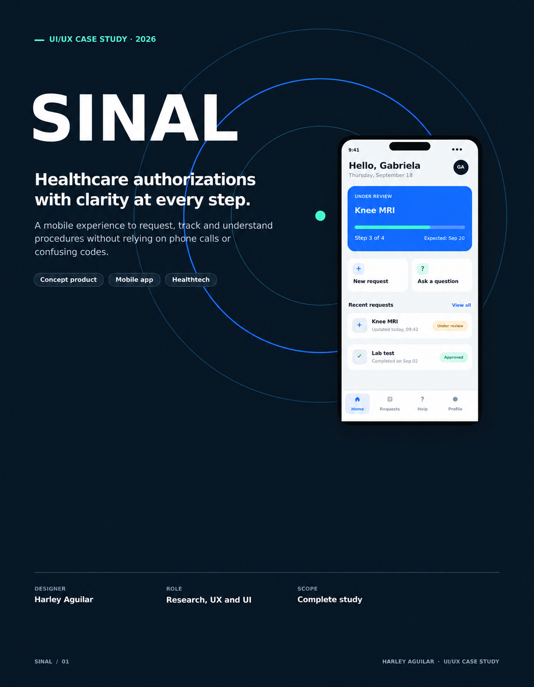
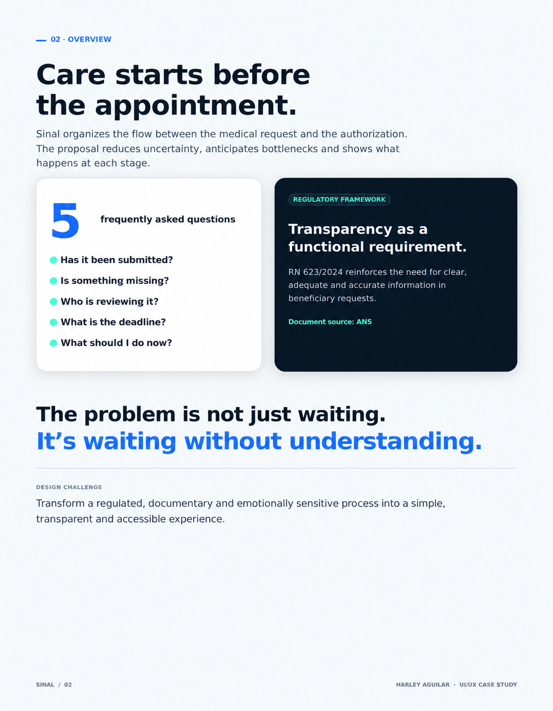
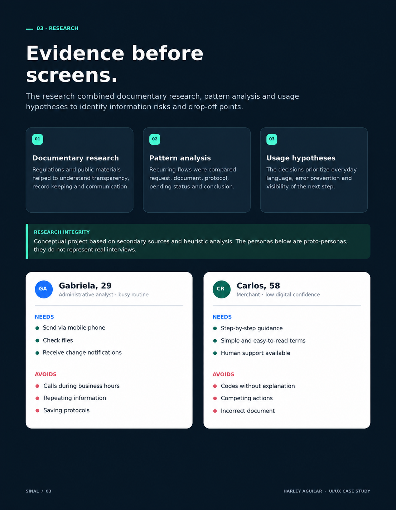
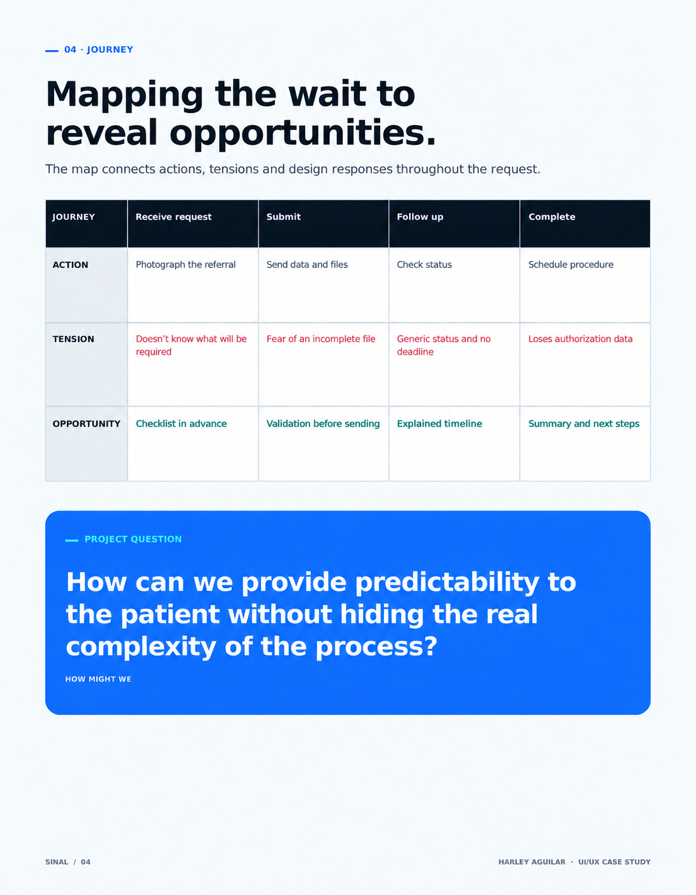
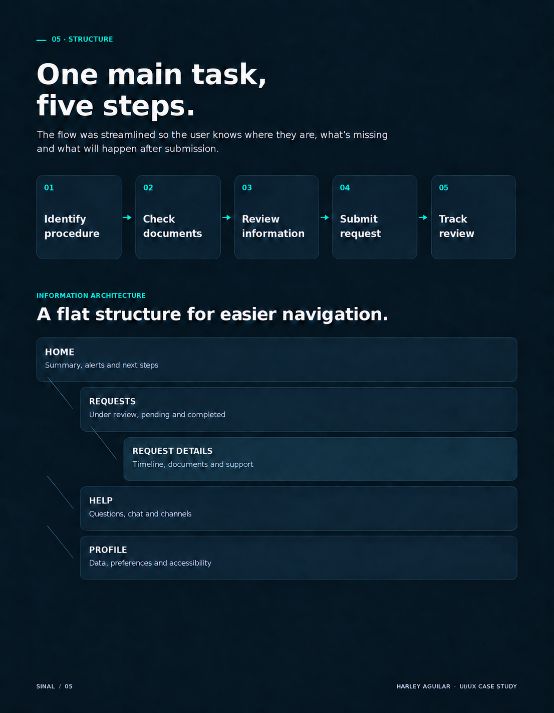
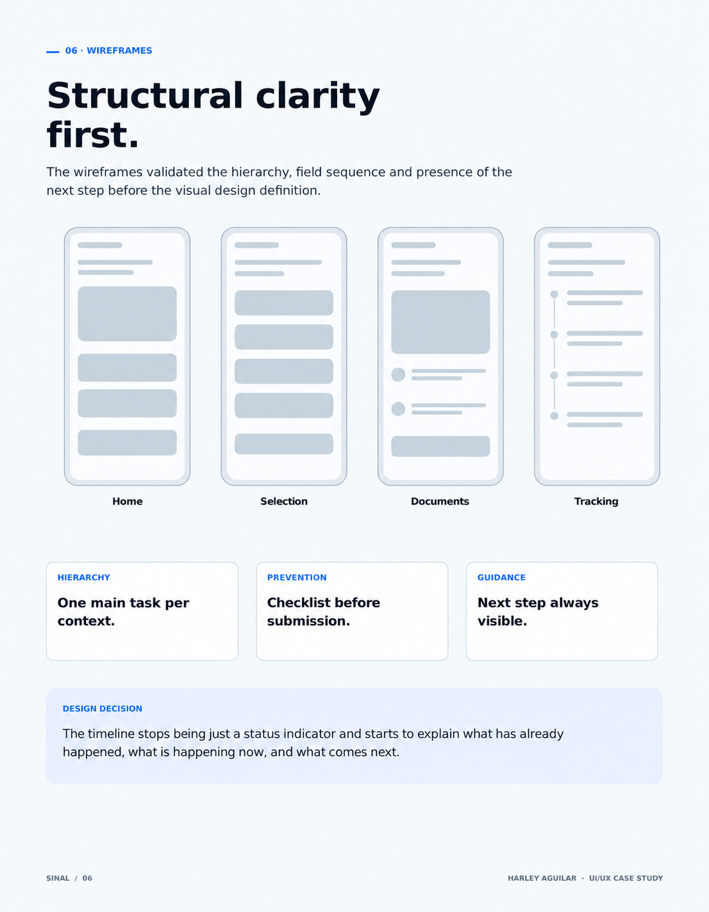
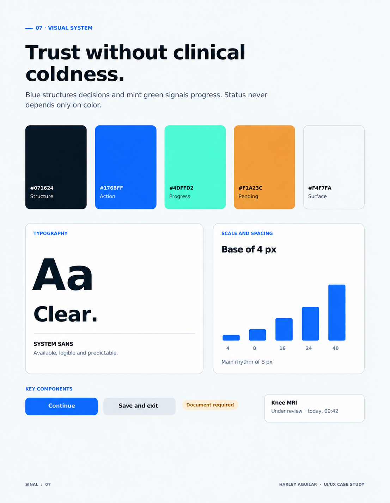
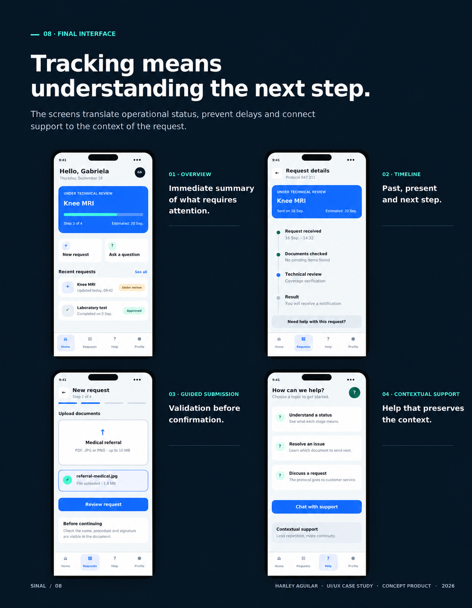
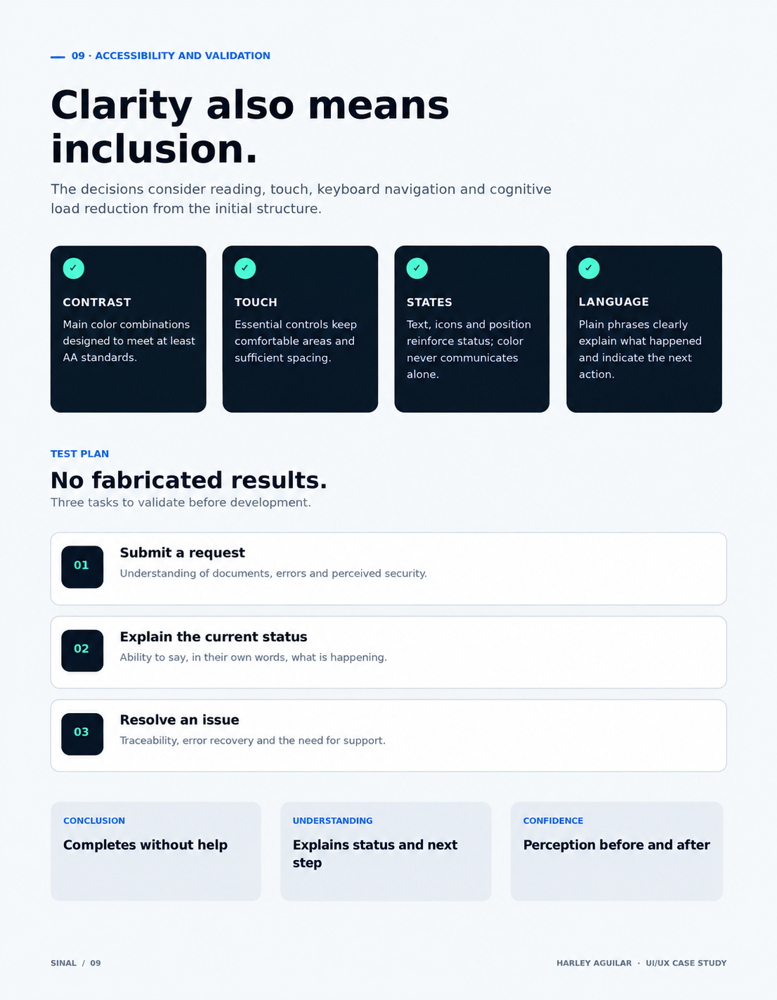
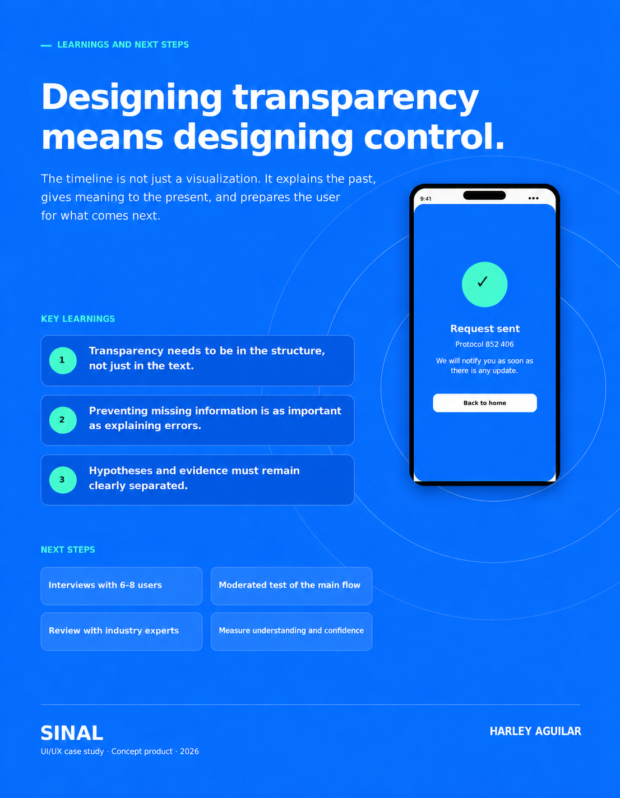

← All projects02 / UI/UX / Product design
SINAL
Healthcare authorizations with clarity at every step. A case study for an app concept to request, track and understand procedures.
UI/UX · Research · Information architecture · Interface

01 / Cover — Sinal, healthcare authorizations with clarity at every step · Click to enlarge

02 / Overview and design challenge · Click to enlarge

03 / Desk research and proto-personas · Click to enlarge

04 / Patient journey and opportunities · Click to enlarge

05 / Information architecture and flow · Click to enlarge

06 / Wireframes and structural decisions · Click to enlarge

07 / Visual system: colors, typography and components · Click to enlarge

08 / Final app interfaces · Click to enlarge

09 / Accessibility and validation plan · Click to enlarge

10 / Conclusion, lessons learned and next steps · Click to enlarge